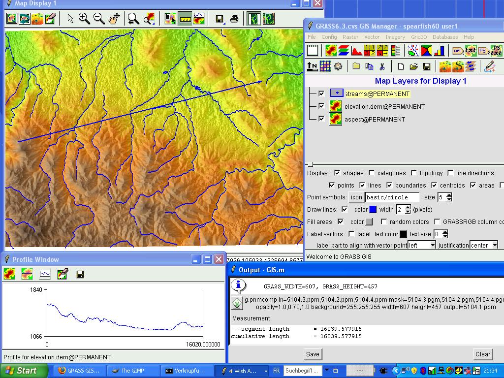

Portable GIS: A Brief Update
Jo Cook, Astun Technology / @archaeogeek
Once upon a time... (in 2006)
It was hard to work with open source geospatial tools, you had to use the command line to install and configure, let alone use them
QGIS was 4 years old, but not commonly used
GRASS GIS was the most common open source desktop GIS and it looked like this:
(flashback to FOSS4G 2007)
Born 2006 (ish)
"por.ta.ble": capable of being carried or moved about
"g.i.s": geographical information systems
aka: GIS on a stick
Portable GIS (noun)
What it is:
A self-contained set of the common open source GIS packages, designed to run in windows, from a USB stick
Installed using a single installer file, requiring no additional configuration or setup
Along with some Ordnance Survey Open Data
And a control panel for easy access to all the components
What it is not:
A Bootable Drive (like OSGeo Live)
Cross-Platform
Compatible with "portableapps.com"
Small- current installation is a 1GB download and 3GB installed
also not a stealth system
It has many potential uses; like rapid-deployment scenarios, education, training workshops, any time you want to take your work home with you...
But what software does it contain?
Where can I get it?
Download the exe file (~1GB) from:
archaeogeek.com/portable-gis.html
What's exciting about the current release
QGIS 2.14
Geoserver 2.8
Loader update
...and...
... finally...
A repository for the changed files (in progress) at gitlab.com/archaeogeek/portable-gis (currently private)
Full online developer and user documentation (in progress) at portable-gis-docs.readthedocs.org
Next release
PostgreSQL/PostGIS -> Latest Stable
Next QGIS LTR
Other program updates
Thanks!
archaeogeek.com/portable-gis.html
Jo Cook, Astun Technology / @archaeogeek